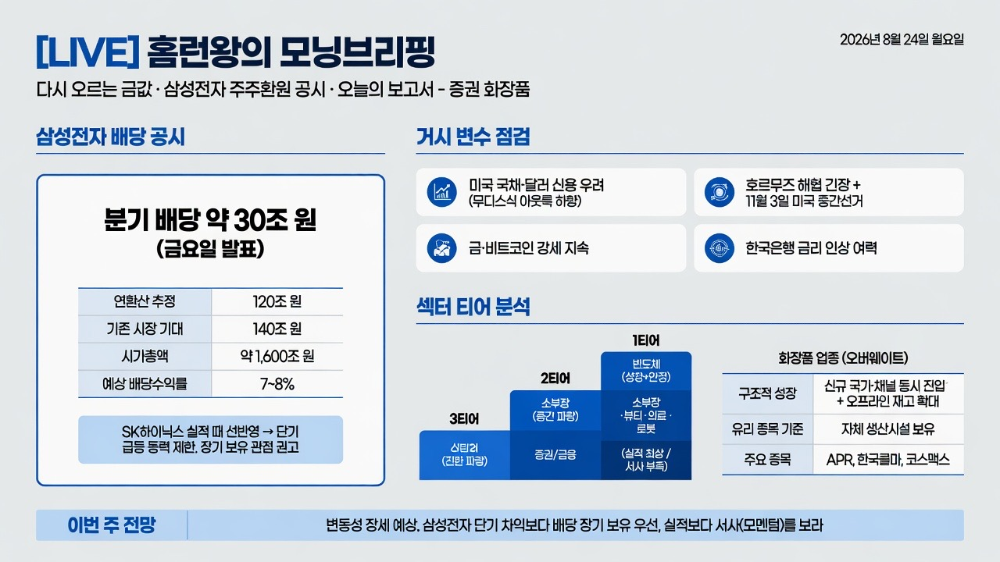

슈퍼개미 이세무사TVMORNING DIGEST · 2026-08-25 · 슈퍼개미 이세무사TV🎬 영상
[LIVE] 홈런왕의 모닝브리핑 - 다시 오르는 금값, 삼성전자 주주화원 공시, 오늘의 보고서 - 증권 화장품

01핵심 개요
항목
내용
채널
슈퍼개미 이세무사TV (밸런스 투자 아카데미, 진행자 "홈런왕")
방영일
2026년 8월 24일 월요일 아침
성격
데일리 모닝 마켓 브리핑(라이브)
핵심 종목/이슈
삼성전자 배당(30조 규모) 공시, 미국 국채·달러 약세 신호, 호르무즈 해협 긴장, 화장품 업종 강세, 증권주 실적 대비 저평가
오늘의 결론
이번 주(월~수)는 변동성 장세 예상, 삼성전자는 단기 차익보다 장기 보유 관점 권고
02핵심 기능/내용 구조
이 영상은 크게 세 블록으로 구성된다.
1
삼성전자 배당 공시 해석지난 금요일 발표된 분기 배당(약 30조 규모)이 이미 SK하이닉스 실적 발표 때 선반영된 재료라 급등 동력으로 보기 어렵다는 진단(0:00).
2
거시 변수 점검미국 국채·달러에 대한 신용 의견 악화(무디스식 아웃룩 하향 뉘앙스), 비트코인·금 강세, 호르무즈 해협 긴장과 11월 3일 미국 중간선거까지 이어지는 지정학 불확실성, 한국은행의 금리 인상 여력(2:00~5:30).
3
섹터별 티어 분석화장품 업종의 구조적 성장 재평가와, 반도체·소부장·뷰티·의료·로봇 대비 3티어로 분류된 증권(금융)주의 실적-주가 괴리 진단(7:00~).
03기술적 맥락 (시장 데이터·근거 자료)
삼성전자 배당: 금요일 분기 배당 발표, 규모 약 30조원. 연환산 시 90~110조 원 구간이던 기존 추정에서 분기 30조 × 4 = 약 120조 원 수준으로 상향. 다만 시장 기대치였던 140조 원에는 못 미침. 발표 주체는 교보증권 리서치 보고서 인용.
밸류에이션 개산: 연 120조 원 수익을 삼성전자 시가총액 약 1,600조 원(진행자는 "1000조", "1600조" 두 표현을 섞어 언급, 대략 1600조 기준)에 대입하면 수익률 약 7~8% 수준이라는 약식 계산 제시(3:30).
화장품 업종 리포트 인용: "2026년 화장품 업종은 최근 2년과 다른 국면", 기존 채널 점유율 상승에 신규 국가·신규 채널 진입이 동시에 더해지는 구조, 오프라인 리테일러의 3분기 재고 매입 확대, ODM사 조업일수 증가로 2026년 3분기 매출 성장 전망. 오버웨이트(비중 확대) 의견 유지.
화장품 대표 종목: APR(생산·유통·마케팅 전 과정 자체 수행), 한국콜마·코스맥스(ODM/OEM, 자체 생산시설 보유) — 자체 생산 케파를 보유한 업체가 수익성에서 유리하다는 논지.
증권업 실적 지표: 다수 증권사 영업이익 전년 대비 100~400% 증가, 순이익 100% 이상 증가 사례 다수(키움 등 예시 거론). 미래에셋증권은 스페이스X 지분 평가차익 요인 언급.
신한투자증권 리포트: "사상 최대 실적에도 주가는 역행" 진단을 인용, 진행자가 자신의 해석을 덧붙임.
04전략적 의미
삼성전자: 선반영된 호재이므로 이번 주 "미친 듯한" 급등 기대는 자제 필요. 단기 트레이딩보다는 배당수익을 노린 장기 보유(우선주 vs 본주 선택은 배당수익률 선호도에 따라 결정) 전략이 합리적이라는 조언(4:00).
섹터 티어 전략: 진행자는 자체 등급표(티어표)를 제시 — 1티어 반도체(성장+안정 동시 보유), 2티어 소부장·뷰티·의료·로봇(강한 성장 서사), 3티어 금융/증권(실적은 최상급이나 성장 서사 부족). 투자 판단 시 "실적"뿐 아니라 "서사(모멘텀)"의 중요성을 강조.
증권주 포지셔닝: 실적 대비 저평가 상태지만, 성장 지속 가능성에 대한 설득력 있는 서사가 없어 "안전자산" 정도로만 접근할 것을 권고. 변동성 장세에 지친 투자자에게 대안이 될 수 있다는 절충안 제시.
거시 리스크 관리: 미국 달러/국채에 대한 신용 우려, 호르무즈 해협 긴장, 미국 중간선거(11월 3일)까지의 불확실성을 복합적으로 고려해 단기 방향성 예단을 자제하는 신중한 태도.
05핵심 워크플로우·방법론 (모닝 브리핑 진행 방식)
전일·주말 이슈 리캡: 금요일 장 마감 후 나온 주요 공시(삼성전자 배당)부터 짚고 시작.
선반영 여부 검증: 호재가 이미 주가에 반영됐는지(SK하이닉스 실적 발표 시점과 비교)를 먼저 따져 급등 기대를 조정.
거시 변수 스캔: 미국 국채·달러 신용도, 지정학 리스크(호르무즈), 정치 일정(미국 중간선거), 국내 통화정책 여력을 순차 점검.
섹터 리포트 인용 및 재해석: 증권사 보고서(교보증권, 신한투자증권 등)를 인용하되 진행자 본인의 티어 프레임워크로 재해석해 시청자에게 실행 가능한 관점 제공.
종목 스크리닝 팁 제공: 화장품 업종에서 "자체 생산시설 보유" 여부를 스크리닝 기준으로 제시하고, 턴어라운드 종목도 대안으로 언급.
주간 전망으로 마무리: 이번 주 변동성 시나리오를 대화체로 예시("삼성전자 왜 이렇게 좋냐" → "먹을 만큼 먹었다" 등)하며 방송 종료.
06활용 시나리오
삼성전자 보유자의 의사결정: 배당 공시 이후 단기 매도 타이밍을 고민하는 투자자가, "선반영" 논리와 밸류에이션 개산(연 7~8% 수익률)을 참고해 장기 보유 여부를 판단하는 데 활용.
화장품 업종 신규 진입자: APR·한국콜마·코스맥스 중 어떤 종목을 담을지 고민할 때, "자체 생산시설 보유" 기준과 턴어라운드 종목 발굴이라는 두 가지 스크리닝 축을 참고 자료로 활용.
섹터 로테이션 판단: 반도체·뷰티·의료·로봇(성장주) vs 증권/금융(안정주) 사이에서 포트폴리오 비중을 조절하려는 투자자가, "실적 vs 서사" 프레임워크를 참고해 리스크 성향에 맞는 섹터를 선택.
거시 리스크 모니터링: 미국 달러 신용 우려, 호르무즈 해협 이슈, 중간선거 일정 등 여러 매크로 변수를 한 번에 브리핑받아 주간 변동성 대비 시나리오를 세우는 용도.
07현황 및 전망
삼성전자: 이번 주(월~수)는 혼조세 예상, 목~금경 방향성이 명확해질 가능성. 배당 공시는 재료 소멸(선반영) 상태로 판단되어 추가 급등보다는 변동성 장세 전망(5:00).
거시: 호르무즈 해협은 이란도 완전 통제력을 갖추지 못한 상태로 통행량이 오히려 증가 중이며, 미국·이란 모두 뚜렷한 카드가 부족해 11월 3일 중간선거 전까지 애매한 긴장 유지가 예상됨. 한국은 저금리 구간에서 인상 여력이 충분해 경제 전반 우려는 크지 않다고 진단.
화장품: 구조적 성장 국면 진입으로 평가되나 일부 선반영 있어 "지금이 바닥"이라는 낙관은 경계. 2026년 3분기 매출 성장 전망이 이어지는 만큼 업종 오버웨이트 의견 유지.